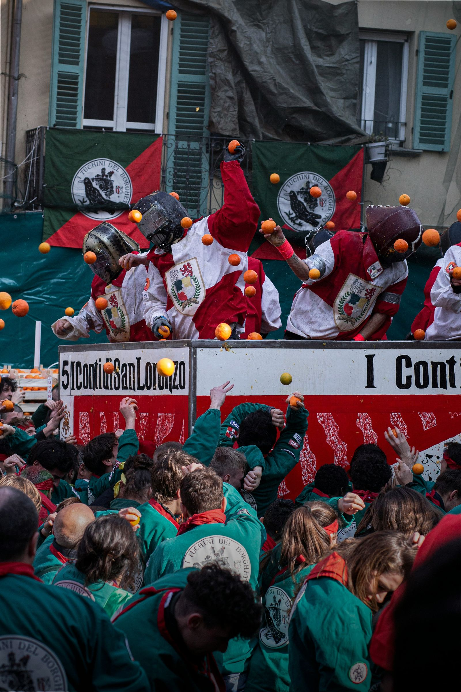

Experience the vibrant Carnival of Ivrea in Piedmont, where neighborhoods compete in a spectacular "Battle of the Oranges." Clad in the traditional colors of their districts, residents hurl giant oranges through the streets, partaking in an age-old tradition that celebrates revolutionary ideals of freedom.
Scopri il vivace Carnevale di Ivrea, in Piemonte, dove i quartieri si sfidano in una spettacolare "Battaglia delle arance". Vestiti nei colori tradizionali dei loro rioni, gli abitanti lanciano arance giganti per le strade, in un'antica tradizione che celebra ideali di libertà rivoluzionaria.
Il Carnevale è una festa molto speciale qui in Italia, e una delle celebrazioni più uniche avviene a Ivrea, in Piemonte. Qui, il Carnevale coincide con una battaglia davvero insolita e divertente: la famosa "Battaglia delle arance" tra i quartieri della città!

Immagina quattro quartieri, ognuno vestito con i colori tipici della loro zona, che si sfidano attraverso le strade lanciandosi arance giganti come se fossero gavettoni. E sì, anche gli spettatori rischiano di finire nel bel mezzo di questa festa fruttuosa!
Questa tradizione risale ai tempi della Rivoluzione Francese, quando l'idea di libertà era al centro di tutto. Ogni partecipante deve indossare il famoso berretto frigio rosso, simbolo di ribellione e libertà. Chi non lo fa rischia di diventare bersaglio per i lanciatori di arance sui carri!

Ma c'è di più: c'è anche un'eroina dietro questa festa. Si chiama la "Mugnaia", identificata con Violetta, la figlia del mugnaio. La storia racconta che Violetta, per salvare se stessa da un signore locale prepotente, lo ubriacò e lo decapitò, dando inizio a una rivolta che portò alla liberazione della città.
In breve, se vuoi vivere una festa unica e piena di storia durante il Carnevale, non perderti la Battaglia delle Arance a Ivrea. È un evento che unisce tradizione, divertimento e un po' di ribellione in un'unica grande celebrazione!
fonte: 10 eventi in Italia tra cultura folk e tradizioni popolari
Parole Chiave
| Carnevale | Una festa colorata e gioiosa che si celebra con costumi e musica |
| Ivrea | Una città situata in Piemonte, Italia |
| Piemonte | Una regione nel nord-ovest dell'Italia |
| Quartieri | Le diverse aree o zone di una città |
| Battaglia | Un combattimento o scontro tra due gruppi |
| Arance | Frutti arancioni provenienti dagli alberi di arancio |
| Abitanti | Le persone che vivono in una determinata zona o luogo |
| Colori | Diverse tonalità e sfumature |
| Rioni | Divisioni o quartieri di una città |
| Tradizione | Un'usanza o pratica tramandata nel tempo |
| Libertà | Lo stato di essere libero o indipendente |
| Rivoluzione | Un cambiamento radicale o una trasformazione sociale |
| Mugnaia | Una figura leggendaria associata a Ivrea durante il Carnevale |
| Leggenda | Una storia popolare trasmessa oralmente attraverso generazioni |
| Signore | Un titolo di rispetto o autorità |
| Feudatario | Una persona che riceve terre e potere da un sovrano |
| Ribellione | Un atto di resistenza o rivolta contro un'autorità |
| Orgoglio | Una sensazione di soddisfazione o appagamento per un'identità |
| Comunitario | Relativo alla comunità o alla vita di gruppo |
Esercizio
Domande
- Qual è l'evento principale durante il Carnevale di Ivrea?
- Perché i partecipanti alla festa devono indossare un berretto frigio rosso?
- Chi è la "Mugnaia"?
- Qual è l'origine storica della tradizione della Battaglia delle Arance?
- Cosa rischiano coloro che non indossano il berretto frigio rosso durante la festa?